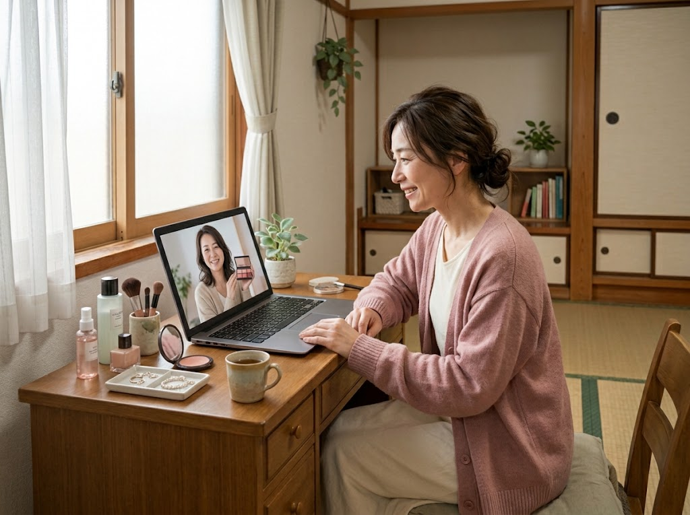
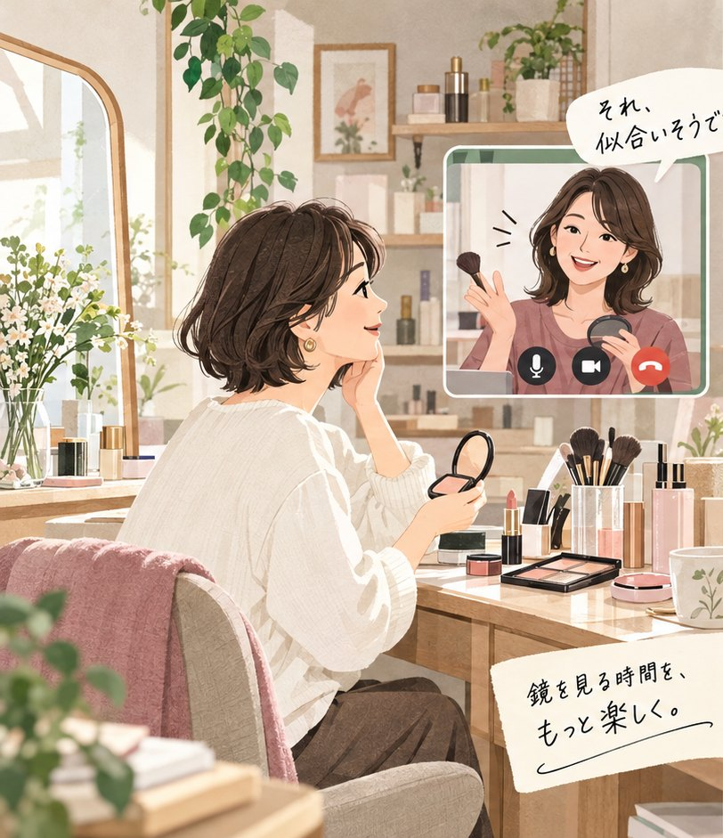
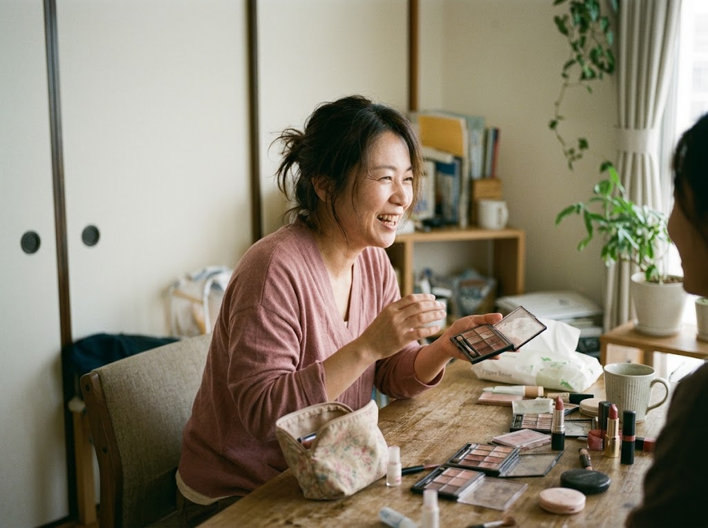
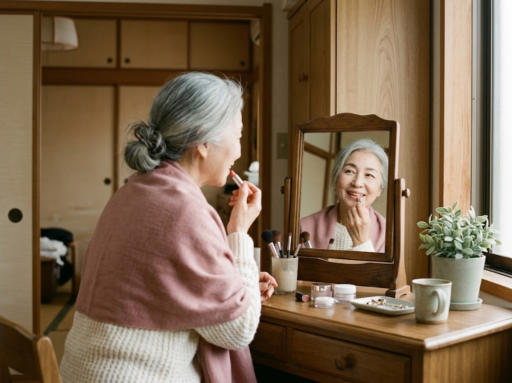
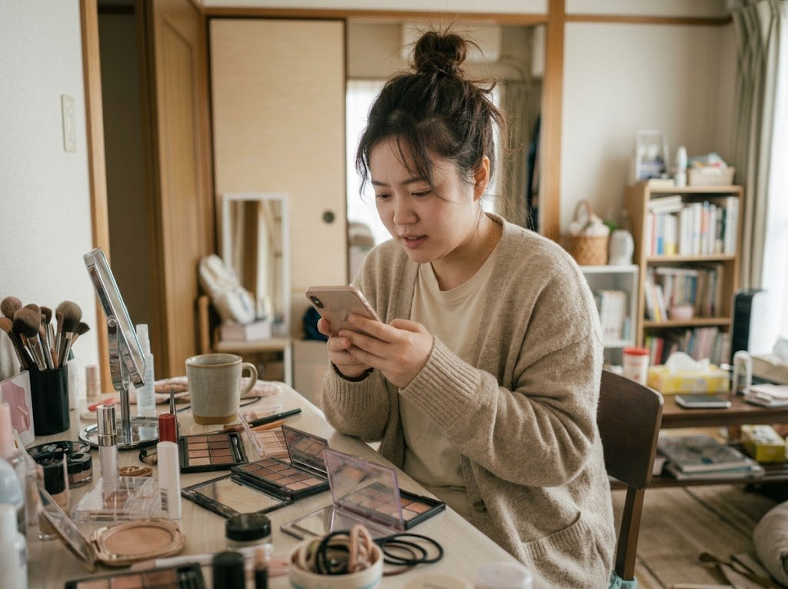
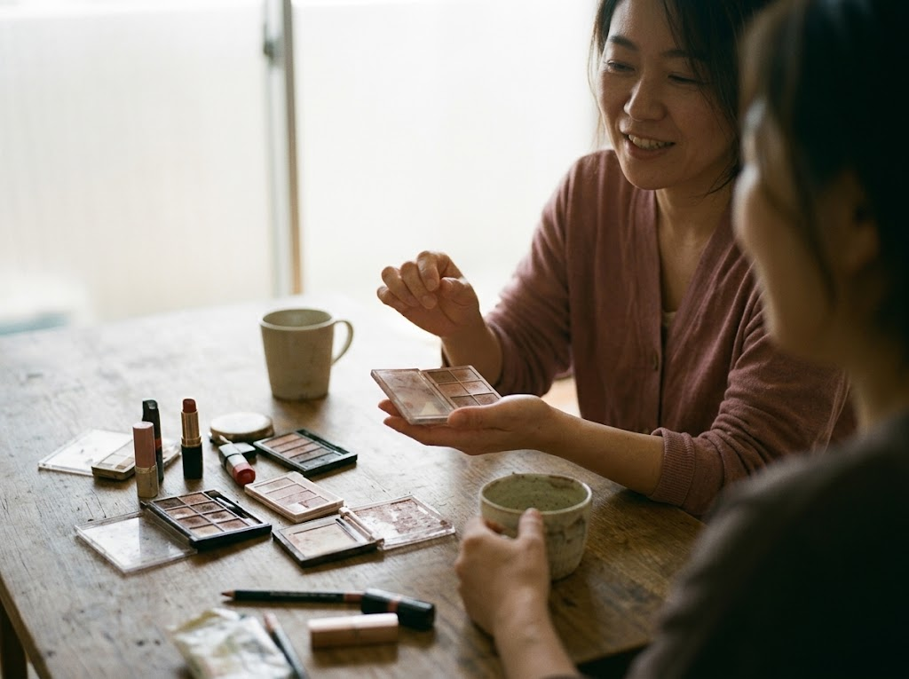
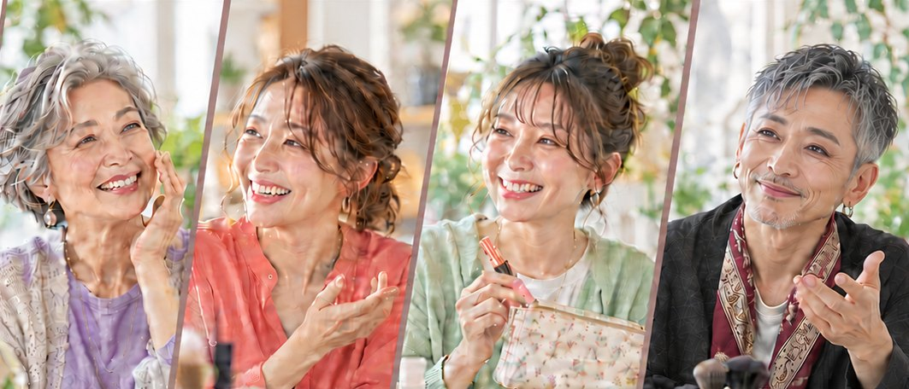

売りたい声より、あなたに似合うを考える声。
コスメを選ぶとき、本当に知りたいのは「何が売れているか」より「何が自分に合うか」。色や質感、使い方まで、あなたの目線で一緒に考える相手がいたら、コスメ選びはもっと楽しくなるはずです。たくさん買うことより、納得して選べることを大切に。
コスメ・メイク相談のアテンダント 登録者募集
売るためじゃない。
売上に追われず、コスメやメイクの知識を、悩みに寄り添う相談相手として活かす人へ。
LINE相談・ビデオ相談で、全国どこからでも活動できます。

コスメ・メイクアテンダントは、美容部員でも、商品を勧める人でもありません。肌の悩み、年齢による変化、手持ちのコスメ、生活や予算まで聞きながら、利用者さんの側に立って「これなら続けられる」メイクを一緒につくる相談相手です。
流行を押しつけるのではなく、話を聞き、調べ、似合う理由を一緒に見つける。その時間が、誰かの毎朝や外出を少し前向きにします。

コスメを選ぶとき、本当に知りたいのは「何が売れているか」より「何が自分に合うか」。色や質感、使い方まで、あなたの目線で一緒に考える相手がいたら、コスメ選びはもっと楽しくなるはずです。たくさん買うことより、納得して選べることを大切に。

気に入って買ったのに、うまく使えないアイシャドウ。いつの間にか出番がなくなったリップ。色の重ね方やつける量、ほかのコスメとの組み合わせを少し変えるだけで、見慣れた道具が新鮮に感じられることも。新しく買い足す前に、ポーチの中の可能性を一緒に探します。

長年愛用している色も、慣れ親しんだメイクも、大切な定番。でも、今の気分や肌の変化に、少し合わなくなっていることもあります。全部を変える必要はありません。好きなところは残しながら、今のその人に似合うバランスへ。「いつもの私」に心地よい変化を添えていきます。

コスメの種類が多すぎて、何から選べばいいかわからない。メイク動画を見ても、自分の場合はどうしたらいいのか迷ってしまう。そんな疑問を、ひとりで抱えなくても大丈夫。今わからないことや、やってみたいことから少しずつ。毎日のメイクを「難しいもの」から「楽しめるもの」へ。
あなたらしいキレイにつながる選択を、
コスメ・メイクアテンダントと。
ドラッグストアからデパコスまで。予算と悩みに合う選び方を一緒に考えます。
年齢や肌の変化、生活に合わせて「続けられるメイク」を提案します。
LINE相談とビデオ相談で、自宅から全国の利用者さんとつながれます。
資格や肩書きだけで選ぶことはありません。けれど、誰かの悩みに本気で向き合う姿勢は大切にしています。アテンダント一人ひとりの対応が、サービスの信頼そのものになるからです。

次のいずれかに当てはまる方を、特に歓迎しています。すべてを満たす必要はありません。

百貨店、ドラッグストア、コスメブランドでの接客・カウンセリング経験など。
ヘアメイク、エステ、ネイル、美容師、撮影現場のメイクなど。
プチプラからデパコスまで試してきた方。成分やテクスチャーの違いを言葉にできる方。
ご自身の経験から、大人の肌悩みや「今の自分に合うメイク」の迷いに共感できる方。年代は問いません。
LINEやビデオ通話で、画面越しでも安心感のあるやり取りができる方。
Instagram、note、動画などで、コスメやメイクについて自分の視点を伝えている方。
アテンダント登録は、コスメが好きという気持ちだけで決まるものではありません。利用者さんがなぜ悩み、どんな時間を求めているのかまで想像しながら、このサービスに関心を持ってくださる方と一緒に活動したいと考えています。
サイト、利用者の声、アテンダントレポートまで。ご自身が登録するサービスとして、まず知ろうとしていただけることを大切にしています。
職歴や資格だけでなく、どんなメイクが好きで、どんな経験を誰かの役に立てたいのか。ありのままの自己紹介を聞かせてください。
数ある活動の場のなかで、なぜここなのか。「売らない相談相手」という向き合い方に共感できるかを大切にしています。
登録前には、代表との面談があります。これは正解を探すための面接ではなく、あなたが大切にしたいことや、利用者さんに届けたい時間をすり合わせる会話です。
実際の面談を聴く最初の応募はフォームから。内容を確認し、相性が合いそうな方へ次のステップをご案内します。
経験・得意分野・活動への想いを、あなたの言葉で教えてください。
利用者さんに提供できる価値と、サービスとの相性を確認します。
代表・運営担当と、経験や活動イメージを率直に話します。
ルールと進め方を共有後、プロフィールを作成して活動開始です。
必須ではありません。業界経験、コスメの知識、発信の継続などを通して、利用者さんに価値を出せるかを総合的に見ています。
応募できます。LINE相談・ビデオ相談が中心のため、ご自身の生活に合わせて活動時間を調整しやすい形です。
はい。オンライン対応が中心なので、お住まいの地域は問いません。活動できる時間帯を応募時にご記入ください。
応募内容を確認したうえで、サービスとの相性が合いそうな方に面談をご案内します。今回進めなかった場合でも、再応募は歓迎しています。
まずは、今までやってきたことと、これから届けたい価値を教えてください。